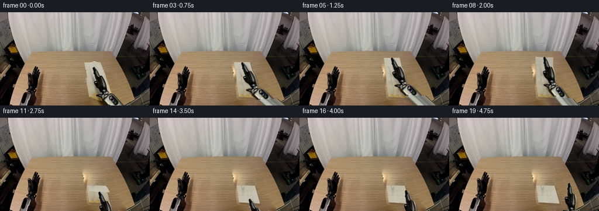
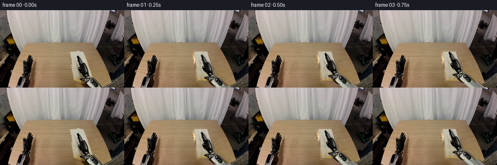

CODING AGENTS AS PIXEL WORLD MODELS
traex/GPT-6.1-Sol · common50_0030
点击播放 · 原生 RGB 像素
此结果可播放，但该运行尚未通过最终提交审核。页面展示不代表评测通过。
逐轮保存的候选
回放视频、检查图与代码变化。
每份候选均可单独播放。实际图片检查记录在下方工具轨迹中。
候选 01播放与检查图
点击播放 · 原生 RGB 像素


展开代码变化
--- 上一保存版本
+++ 本次保存版本
@@ -0,0 +1,249 @@
+from pathlib import Path
+import math
+import numpy as np
+from PIL import Image, ImageDraw, ImageFilter
+import cv2
+from scipy.ndimage import gaussian_filter
+import artifact_io
+
+ROOT=Path(__file__).resolve().parent
+W,H=256,160
+S=4
+SW,SH=W*S,H*S
+source=np.array(Image.open(ROOT/'first_frame.png').convert('RGB'))
+base=source.astype(np.float32)
+
+def polygon_alpha(points, size=(W,H), scale=4):
+ im=Image.new('L',(size[0]*scale,size[1]*scale))
+ ImageDraw.Draw(im).polygon([(round(x*scale),round(y*scale)) for x,y in points], fill=255)
+ return np.asarray(im.resize(size,Image.Resampling.LANCZOS),dtype=np.float32)/255
+
+# The right manipulator is a single rigid photographic component, including
+# the wrist, housing, metallic fasteners, and forearm.
+outline=[(160.1,93.5),(158.7,94.6),(158.7,98.0),(159.9,102.2),
+ (159.9,105.8),(162.5,110.9),(163.4,117.8),(161.5,118.7),
+ (160.6,120.1),(161.2,123.5),(163.1,126.7),(166.9,130.5),
+ (169.5,132.1),(172.1,135.1),(173.1,138.8),(166.2,139.8),
+ (164.2,140.7),(164.2,142.4),(166.4,144.2),(170.2,145.0),
+ (170.5,147.8),(173.7,151.8),(184.5,160.8),(212.7,160.8),
+ (196.2,144.1),(191.3,140.7),(185.8,139.4),(185.6,136.1),
+ (182.9,134.1),(182.4,131.0),(182.0,125.2),(180.8,119.8),
+ (179.0,114.6),(177.0,111.2),(174.5,109.7),(172.2,110.5),
+ (169.9,106.5),(167.7,102.2),(164.5,97.1),(161.6,94.0)]
+robot_a=polygon_alpha(outline)
+
+# Restore only the newly exposed tabletop, using its own fine wood grain.
+removed=polygon_alpha([(142,84),(158,83),(163,82),(173,83),(188,130),
+ (200,138),(215,159),(181,162),(156,151),(151,146)])
+removed=np.maximum(removed, robot_a)
+removed=cv2.dilate(removed,np.ones((5,5),np.uint8))
+removed=gaussian_filter(removed,.65)
+# Copy grain from unobstructed wood at the same depth, and smoothly solve
+# the low-frequency color correction against the surrounding table.
+yy,xx=np.mgrid[0:H,0:W]
+donor=base[yy,np.clip(xx-75,0,W-1)].copy()
+correction=base-donor
+region=removed>.025
+for _ in range(850):
+ average=(np.roll(correction,1,0)+np.roll(correction,-1,0)+np.roll(correction,1,1)+np.roll(correction,-1,1))*.25
+ correction[region]=average[region]
+wood=np.clip(donor+correction,0,255)
+background=base*(1-removed[...,None])+wood*removed[...,None]
+bg=np.array(Image.fromarray(np.uint8(np.clip(background,0,255))).resize((SW,SH),Image.Resampling.LANCZOS),dtype=np.float32)
+
+# Reconstruct a flat cloth texture from the visible strip of this same cloth.
+A=np.array([144.1,85.8]); B=np.array([171.0,85.4]);
+D=np.array([152.5,145.3]); C=np.array([188.7,147.6])
+ML=(A+D)*.5; MR=(B+C)*.5
+TW,TH=180,300
+v,u=np.mgrid[0:TH,0:TW].astype(np.float32)
+u/=TW-1; v/=TH-1
+left=A[None,None,:]*(1-v[...,None])+D[None,None,:]*v[...,None]
+right=B[None,None,:]*(1-v[...,None])+C[None,None,:]*v[...,None]
+pos=left*(1-u[...,None])+right*u[...,None]
+tex=cv2.remap(source,pos[...,0].astype(np.float32),pos[...,1].astype(np.float32),cv2.INTER_CUBIC,borderMode=cv2.BORDER_REFLECT).astype(np.float32)
+# A narrow donor band contains real fibers, not the dark moving robot.
+du=.075+.16*((u*3.6+v*.1)%1)
+donorpos=left*(1-du[...,None])+right*du[...,None]
+clothgrain=cv2.remap(source,donorpos[...,0].astype(np.float32),donorpos[...,1].astype(np.float32),cv2.INTER_CUBIC,borderMode=cv2.BORDER_REFLECT).astype(np.float32)
+# Retain original visible corners and natural hem, replacing occluded texels.
+occ=cv2.remap(robot_a,pos[...,0].astype(np.float32),pos[...,1].astype(np.float32),cv2.INTER_LINEAR,borderMode=cv2.BORDER_CONSTANT)
+occ=cv2.dilate(occ,np.ones((11,11),np.uint8))
+occ=gaussian_filter(occ,2)
+# The original hand's shadow is not baked into the cloth when it is lifted.
+dark=tex.mean(2)<145
+blend=np.maximum(occ,dark.astype(np.float32))
+tex=tex*(1-blend[...,None])+clothgrain*blend[...,None]
+# Gentle crosswise diffuse illumination.
+tex=tex+np.stack([u*1.2,u*.8,u*.4],axis=-1)
+texture=np.uint8(np.clip(tex,0,255))
+
+# Extend the photographic silver forearm below the original field of view.
+EW,EH=340,285
+ra=np.zeros((EH*S,EW*S),np.float32)
+rgb=np.zeros((EH*S,EW*S,3),np.float32)
+rgb[:SH,:SW]=np.array(Image.fromarray(source).resize((SW,SH),Image.Resampling.LANCZOS),dtype=np.float32)
+ra[:SH,:SW]=cv2.resize(robot_a,(SW,SH),interpolation=cv2.INTER_LINEAR)
+yg,xg=np.mgrid[0:EH*S,0:EW*S].astype(np.float32); xg/=S; yg/=S
+axis=np.array([.728,.686]); perp=np.array([-.686,.728]); origin=np.array([181.0,140.8])
+t=(xg-origin[0])*axis[0]+(yg-origin[1])*axis[1]
+r=(xg-origin[0])*perp[0]+(yg-origin[1])*perp[1]
+ext=(yg>=159.75)&(t>=5)&(np.abs(r)<=11.8)
+# Cross-section sampled on the existing forearm, including its side rails.
+sample_t=20.0
+mx=origin[0]+sample_t*axis[0]+r*perp[0]
+my=origin[1]+sample_t*axis[1]+r*perp[1]
+profile=cv2.remap(source,mx.astype(np.float32),my.astype(np.float32),cv2.INTER_LINEAR,borderMode=cv2.BORDER_REFLECT).astype(np.float32)
+# Last visible cross-section is primarily brushed metal; preserve dark rails.
+metal=np.clip(192-45*(np.abs(r)/12)**1.4,0,255)
+procedural=np.stack([metal,metal*.997,metal*.967],axis=-1)
+rail=np.abs(r)>10.2
+procedural[rail]=np.stack([metal[rail]*.3,metal[rail]*.3,metal[rail]*.29],-1)
+profile=.42*profile+.58*procedural
+rgb[ext]=profile[ext];ra[ext]=np.minimum(1,np.maximum(0,(11.8-np.abs(r[ext]))*S))
+# Premultiplied color avoids light halos around the black fingers.
+rgb*=ra[...,None]
+
+table=polygon_alpha([(53,68),(189,67),(231,150),(208,160),(18,160),(17,151)],size=(W,H))
+table=cv2.resize(table,(SW,SH),interpolation=cv2.INTER_LINEAR)
+
+# Coordinate mapping with piecewise affine triangles, using no learned models.
+def draw_mesh(canvas, points, uv, illumination, shadow=False, opacity=1):
+ mapsx=np.full((SH,SW),-10,dtype=np.float32)
+ mapsy=np.full((SH,SW),-10,dtype=np.float32)
+ shade=np.zeros((SH,SW),np.float32)
+ coverage=np.zeros((SH,SW),np.float32)
+ rows,cols=points.shape[:2]
+ for j in range(rows-1):
+ for i in range(cols-1):
+ for ids in [((j,i),(j,i+1),(j+1,i+1)),((j,i),(j+1,i+1),(j+1,i))]:
+ p=np.array([points[a,b] for a,b in ids])*S
+ tx=np.array([uv[a,b] for a,b in ids])
+ sh=np.array([illumination[a,b] for a,b in ids])
+ x0=max(0,int(np.floor(p[:,0].min())));x1=min(SW,int(np.ceil(p[:,0].max()))+1)
+ y0=max(0,int(np.floor(p[:,1].min())));y1=min(SH,int(np.ceil(p[:,1].max()))+1)
+ if x1<=x0 or y1<=y0: continue
+ matrix=np.array([[p[0,0],p[1,0],p[2,0]],[p[0,1],p[1,1],p[2,1]],[1,1,1]])
+ if abs(np.linalg.det(matrix))<.0001:continue
+ gy,gx=np.mgrid[y0:y1,x0:x1]
+ q=np.stack([gx+.5,gy+.5,np.ones_like(gx)],axis=0).reshape(3,-1)
+ bary=(np.linalg.inv(matrix)@q).reshape(3,y1-y0,x1-x0)
+ inside=bary.min(0)>=-.001
+ if not inside.any():continue
+ sx=np.einsum('a,ayx->yx',tx[:,0],bary)*(TW-1)
+ sy=np.einsum('a,ayx->yx',tx[:,1],bary)*(TH-1)
+ lighting=np.einsum('a,ayx->yx',sh,bary)
+ mapsx[y0:y1,x0:x1][inside]=sx[inside]
+ mapsy[y0:y1,x0:x1][inside]=sy[inside]
+ shade[y0:y1,x0:x1][inside]=lighting[inside]
+ coverage[y0:y1,x0:x1][inside]=1
+ if shadow:return coverage
+ colors=cv2.remap(texture,mapsx,mapsy,cv2.INTER_CUBIC,borderMode=cv2.BORDER_REFLECT).astype(np.float32)*shade[...,None]
+ a=coverage*opacity
+ canvas[:]=canvas*(1-a[...,None])+colors*a[...,None]
+ return coverage
+
+NU,NV=15,38
+us=np.linspace(0,1,NU)
+def lower_mesh():
+ vs=np.linspace(.5,1,NV)
+ points=[];uv=[]
+ for vv in vs:
+ L=A*(1-vv)+D*vv;R=B*(1-vv)+C*vv
+ points.append([L*(1-uu)+R*uu for uu in us])
+ uv.append([[uu,vv] for uu in us])
+ return np.array(points),np.array(uv),np.ones((NV,NU))
+lower,loweruv,lowerlight=lower_mesh()
+
+def upper_mesh(theta,project_shadow=False):
+ # Arclength-parameterized curved sheet: the hinge stays fixed and the
+ # free edge sweeps up and over, ending on the opposite edge.
+ points=[];uv=[];light=[];heights=[]
+ curvature=.48*math.sin(theta)
+ for tt in np.linspace(0,1,NV):
+ if abs(curvature)<1e-5:
+ dep=tt*math.cos(theta); hei=tt*math.sin(theta)
+ else:
+ p0=theta-curvature;p1=p0+2*curvature*tt
+ dep=(math.sin(p1)-math.sin(p0))/(2*curvature)
+ hei=(math.cos(p0)-math.cos(p1))/(2*curvature)
+ row=[];lrow=[];zrow=[]
+ for uu in us:
+ hinge=ML*(1-uu)+MR*uu
+ edge=A*(1-uu)+B*uu
+ p=hinge+(edge-hinge)*dep
+ # Small across-width sag belongs to the fabric, never the arm.
+ sag=.9*math.sin(theta)*math.sin(math.pi*uu)*tt
+ z=35.2*hei-sag
+ if not project_shadow:p[1]-=z
+ else:p+=np.array([2.0,3.0])
+ if theta>3.05 and not project_shadow:p[1]-=.45*tt
+ row.append(p);zrow.append(max(0,z))
+ local=theta+curvature*(2*tt-1)
+ lit=.9+.1*abs(math.cos(local))
+ lit+=.025*math.sin(math.pi*uu)*math.sin(theta)
+ lrow.append(lit)
+ points.append(row);heights.append(zrow);light.append(lrow)
+ uv.append([[uu,.5*(1-tt)] for uu in us])
+ return np.array(points),np.array(uv),np.array(light),np.array(heights)
+
+
+def rigid_arm(tip, angle):
+ radians=math.radians(angle)
+ R=np.array([[math.cos(radians),-math.sin(radians)],[math.sin(radians),math.cos(radians)]])
+ translation=np.array(tip)-R@np.array([160.1,94.0])
+ M=np.column_stack([R,translation*S]).astype(np.float32)
+ a=cv2.warpAffine(ra,M,(SW,SH),flags=cv2.INTER_LINEAR,borderMode=cv2.BORDER_CONSTANT)
+ color=cv2.warpAffine(rgb,M,(SW,SH),flags=cv2.INTER_LINEAR,borderMode=cv2.BORDER_CONSTANT)
+ return a,color
+
+angles=[0,0,0,0,0,.25,.58,.95,1.35,1.85,2.30,2.67,2.96,math.pi,math.pi,math.pi,math.pi,math.pi,math.pi,math.pi]
+frames=[source.copy()]
+for f in range(1,20):
+ theta=angles[f]
+ up,upuv,uplit,z=upper_mesh(theta)
+ edge=(up[-1,0]+up[-1,-1])*.5
+ ztip=(z[-1,0]+z[-1,-1])*.5
+ if f==1:tip=(159.3,91.5); angle=-1
+ elif f==2:tip=(158.0,88.1);angle=-2
+ elif f in [3,4]:tip=(157.55,85.6);angle=-3
+ elif f<=13:tip=edge+np.array([-.25,-.3]);angle=-3+10*math.sin(theta)
+ elif f==14:tip=(170.5,139.0);angle=1;ztip=0
+ elif f==15:tip=(173,126.5);angle=4;ztip=0
+ elif f==16:tip=(182.0,124);angle=9;ztip=3
+ elif f==17:tip=(194,116.5);angle=15;ztip=8
+ else:tip=(205,111.7);angle=18;ztip=10
+ canvas=bg.copy()
+ # Cloth-to-table contact shadow and the suspended free half's shadow.
+ shpoints,_,_,_=upper_mesh(theta,True)
+ cloth_shadow=draw_mesh(canvas,shpoints,upuv,uplit,True)
+ low_shadow=draw_mesh(canvas,lower+np.array([.9,1.2]),loweruv,lowerlight,True)
+ sh=gaussian_filter(cloth_shadow,.6*S+ztip*.035*S)*.12
+ sh=np.maximum(sh,gaussian_filter(low_shadow,.45*S)*.16)*table
+ canvas*=1-sh[...,None]
+ draw_mesh(canvas,lower,loweruv,lowerlight)
+ draw_mesh(canvas,up,upuv,uplit)
+ # A thin doubled hem and the closed crease remain visible after release.
+ if f>=12:
+ edgeimage=Image.new('RGBA',(SW,SH))
+ dr=ImageDraw.Draw(edgeimage)
+ crease=[tuple(p*S) for p in up[0]]
+ dr.line(crease,fill=(141,129,103,115),width=2)
+ bottomline=[tuple(p*S) for p in up[-1]]
+ dr.line(bottomline,fill=(166,151,119,155),width=2)
+ e=np.asarray(edgeimage,dtype=np.float32);ea=e[:,:,3:]/255
+ canvas=canvas*(1-ea)+e[:,:,:3]*ea
+ arma,armcolor=rigid_arm(tip,angle)
+ shadowM=np.array([[1,0,3.5*S],[0,1,(3.0+ztip*.65)*S]],np.float32)
+ armshadow=cv2.warpAffine(arma,shadowM,(SW,SH))
+ armshadow=gaussian_filter(armshadow,(1.35+ztip*.045)*S)*(.22 if f<16 else .16)*table
+ canvas*=1-armshadow[...,None]
+ canvas=canvas*(1-arma[...,None])+armcolor
+ frame=np.array(Image.fromarray(np.uint8(np.clip(canvas,0,255))).resize((W,H),Image.Resampling.LANCZOS))
+ frames.append(frame)
+frames=np.stack(frames).astype(np.uint8)
+artifact_io.save(frames,ROOT)
+# An intermediate, enlarged contact sheet for visual quality inspection.
+preview=Image.open(ROOT/'inspection.png')
+preview.resize((preview.width*2,preview.height*2)).save(ROOT/'.tmp'/'candidate.png')
+Image.fromarray(np.uint8(np.clip(background,0,255))).resize((1024,640)).save(ROOT/'.tmp'/'background.png')
可观测工具轨迹
实际执行的命令与返回图片。
命令 1exit 0
/bin/bash -lc "ls -la && cat prompt.txt && printf '\\n---RULES---\\n' && cat GENERATION_RULES.md"
命令 2exit 0
/bin/bash -lc "cat task_spec.json && cat artifact_io.py && python - <<'PY'
from PIL import Image
im=Image.open('first_frame.png'); im.resize((1024,640)).save('.tmp/large.png')
PY"命令 3exit 0
/bin/bash -lc "python - <<'PY' import importlib.util for m in ['numpy','PIL','scipy','cv2']: print(m, bool(importlib.util.find_spec(m))) PY"
命令 4exit 0
/bin/bash -lc "python - <<'PY'
from PIL import Image, ImageDraw
im=Image.open('first_frame.png').resize((1024,640));d=ImageDraw.Draw(im)
for x in range(140,216,5):
d.line((x*4,320,x*4,640),fill=(200,90,80),width=1);d.text((x*4,320),str(x),fill=(255,0,0))
for y in range(85,161,5):
d.line((552,y*4,860,y*4),fill=(200,90,80),width=1);d.text((552,y*4),str(y),fill=(255,0,0))
im.save('.tmp/grid.png')
PY"命令 5exit 0
/bin/bash -lc "python - <<'PY'
from PIL import Image
im=Image.open('first_frame.png'); im.crop((138,79,218,160)).resize((640,648)).save('.tmp/crop.png')
PY"命令 6exit 0
/bin/bash -lc "python - <<'PY'
from PIL import Image
import numpy as np
im=np.array(Image.open('first_frame.png'))
for p in [(145,88),(160,87),(168,88),(151,103),(156,115),(152,130),(155,140),(176,148),(190,139),(175,110),(151,115),(148,115),(171,87),(183,115),(182,137),(188,145),(200,159)]:
print(p, im[p[1],p[0]].tolist())
PY"命令 7exit 0
/bin/bash -lc "python - <<'PY'
from PIL import Image, ImageDraw
im=Image.open('first_frame.png').resize((1536,960));d=ImageDraw.Draw(im)
for x in range(150,216,2):
d.line((x*6,87*6,x*6,960),fill=(190,90,70),width=1);d.text((x*6,87*6),str(x),fill=(255,20,20))
for y in range(90,161,5):
d.line((150*6,y*6,216*6,y*6),fill=(190,90,70),width=1);d.text((150*6,y*6),str(y),fill=(255,20,20))
im.crop((900,522,1296,960)).save('.tmp/grid2.png')
PY"命令 8exit 0
/bin/bash -lc "python - <<'PY'
from PIL import Image
import numpy as np
im=np.array(Image.open('first_frame.png'))
for y in [87,95,110,130,145]:
for x in [100,120,135,140,200,205]:
print((x,y),im[max(y-1,0):y+2,x-2:x+3].mean(axis=(0,1)).round())
PY"命令 9exit 0
/bin/bash -lc "cat > generate.py <<'PY'
from pathlib import Path
import math
import numpy as np
from PIL import Image, ImageDraw, ImageFilter
import cv2
from scipy.ndimage import gaussian_filter
import artifact_io
ROOT=Path(__file__).resolve().parent
W,H=256,160
S=4
SW,SH=W*S,H*S
source=np.array(Image.open(ROOT/'first_frame.png').convert('RGB'))
base=source.astype(np.float32)
def polygon_alpha(points, size=(W,H), scale=4):
im=Image.new('L',(size[0]*scale,size[1]*scale))
ImageDraw.Draw(im).polygon([(round(x*scale),round(y*scale)) for x,y in points], fill=255)
return np.asarray(im.resize(size,Image.Resampling.LANCZOS),dtype=np.float32)/255
# The right manipulator is a single rigid photographic component, including
# the wrist, housing, metallic fasteners, and forearm.
outline=[(160.1,93.5),(158.7,94.6),(158.7,98.0),(159.9,102.2),
(159.9,105.8),(162.5,110.9),(163.4,117.8),(161.5,118.7),
(160.6,120.1),(161.2,123.5),(163.1,126.7),(166.9,130.5),
(169.5,132.1),(172.1,135.1),(173.1,138.8),(166.2,139.8),
(164.2,140.7),(164.2,142.4),(166.4,144.2),(170.2,145.0),
(170.5,147.8),(173.7,151.8),(184.5,160.8),(212.7,160.8),
(196.2,144.1),(191.3,140.7),(185.8,139.4),(185.6,136.1),
(182.9,134.1),(182.4,131.0),(182.0,125.2),(180.8,119.8),
(179.0,114.6),(177.0,111.2),(174.5,109.7),(172.2,110.5),
(169.9,106.5),(167.7,102.2),(164.5,97.1),(161.6,94.0)]
robot_a=polygon_alpha(outline)
# Restore only the newly exposed tabletop, using its own fine wood grain.
removed=polygon_alpha([(142,84),(158,83),(163,82),(173,83),(188,130),
(200,138),(215,159),(181,162),(156,151),(151,146)])
removed=np.maximum(removed, robot_a)
removed=cv2.dilate(removed,np.ones((5,5),np.uint8))
removed=gaussian_filter(removed,.65)
# Copy grain from unobstructed wood at the same depth, and smoothly solve
# the low-frequency color correction against the surrounding table.
yy,xx=np.mgrid[0:H,0:W]
donor=base[yy,np.clip(xx-75,0,W-1)].copy()
correction=base-donor
region=removed>.025
for _ in range(850):
average=(np.roll(correction,1,0)+np.roll(correction,-1,0)+np.roll(correction,1,1)+np.roll(correction,-1,1))*.25
correction[region]=average[region]
wood=np.clip(donor+correction,0,255)
background=base*(1-removed[...,None])+wood*removed[...,None]
bg=np.array(Image.fromarray(np.uint8(np.clip(background,0,255))).resize((SW,SH),Image.Resampling.LANCZOS),dtype=np.float32)
# Reconstruct a flat cloth texture from the visible strip of this same cloth.
A=np.array([144.1,85.8]); B=np.array([171.0,85.4]);
D=np.array([152.5,145.3]); C=np.array([188.7,147.6])
ML=(A+D)*.5; MR=(B+C)*.5
TW,TH=180,300
v,u=np.mgrid[0:TH,0:TW].astype(np.float32)
u/=TW-1; v/=TH-1
left=A[None,None,:]*(1-v[...,None])+D[None,None,:]*v[...,None]
right=B[None,None,:]*(1-v[...,None])+C[None,None,:]*v[...,None]
pos=left*(1-u[...,None])+right*u[...,None]
tex=cv2.remap(source,pos[...,0].astype(np.float32),pos[...,1].astype(np.float32),cv2.INTER_CUBIC,borderMode=cv2.BORDER_REFLECT).astype(np.float32)
# A narrow donor band contains real fibers, not the dark moving robot.
du=.075+.16*((u*3.6+v*.1)%1)
donorpos=left*(1-du[...,None])+right*du[...,None]
clothgrain=cv2.remap(source,donorpos[...,0].astype(np.float32),donorpos[...,1].astype(np.float32),cv2.INTER_CUBIC,borderMode=cv2.BORDER_REFLECT).astype(np.float32)
# Retain original visible corners and natural hem, replacing occluded texels.
occ=cv2.remap(robot_a,pos[...,0].astype(np.float32),pos[...,1].astype(np.float32),cv2.INTER_LINEAR,borderMode=cv2.BORDER_CONSTANT)
occ=cv2.dilate(occ,np.ones((11,11),np.uint8))
occ=gaussian_filter(occ,2)
# The original hand's shadow is not baked into the cloth when it is lifted.
dark=tex.mean(2)<145
blend=np.maximum(occ,dark.astype(np.float32))
tex=tex*(1-blend[...,None])+clothgrain*blend[...,None]
# Gentle crosswise diffuse illumination.
tex=tex+np.stack([u*1.2,u*.8,u*.4],axis=-1)
texture=np.uint8(np.clip(tex,0,255))
# Extend the photographic silver forearm below the original field of view.
EW,EH=340,285
ra=np.zeros((EH*S,EW*S),np.float32)
rgb=np.zeros((EH*S,EW*S,3),np.float32)
rgb[:SH,:SW]=np.array(Image.fromarray(source).resize((SW,SH),Image.Resampling.LANCZOS),dtype=np.float32)
ra[:SH,:SW]=cv2.resize(robot_a,(SW,SH),interpolation=cv2.INTER_LINEAR)
yg,xg=np.mgrid[0:EH*S,0:EW*S].astype(np.float32); xg/=S; yg/=S
axis=np.array([.728,.686]); perp=np.array([-.686,.728]); origin=np.array([181.0,140.8])
t=(xg-origin[0])*axis[0]+(yg-origin[1])*axis[1]
r=(xg-origin[0])*perp[0]+(yg-origin[1])*perp[1]
ext=(yg>=159.75)&(t>=5)&(np.abs(r)<=11.8)
# Cross-section sampled on the existing forearm, including its side rails.
sample_t=20.0
mx=origin[0]+sample_t*axis[0]+r*perp[0]
my=origin[1]+sample_t*axis[1]+r*perp[1]
profile=cv2.remap(source,mx.astype(np.float32),my.astype(np.float32),cv2.INTER_LINEAR,borderMode=cv2.BORDER_REFLECT).astype(np.float32)
# Last visible cross-section is primarily brushed metal; preserve dark rails.
metal=np.clip(192-45*(np.abs(r)/12)**1.4,0,255)
procedural=np.stack([metal,metal*.997,metal*.967],axis=-1)
rail=np.abs(r)>10.2
procedural[rail]=np.stack([metal[rail]*.3,metal[rail]*.3,metal[rail]*.29],-1)
profile=.42*profile+.58*procedural
rgb[ext]=profile[ext];ra[ext]=np.minimum(1,np.maximum(0,(11.8-np.abs(r[ext]))*S))
# Premultiplied color avoids light halos around the black fingers.
rgb*=ra[...,None]
table=polygon_alpha([(53,68),(189,67),(231,150),(208,160),(18,160),(17,151)],size=(W,H))
table=cv2.resize(table,(SW,SH),interpolation=cv2.INTER_LINEAR)
# Coordinate mapping with piecewise affine triangles, using no learned models.
def draw_mesh(canvas, points, uv, illumination, shadow=False, opacity=1):
mapsx=np.full((SH,SW),-10,dtype=np.float32)
mapsy=np.full((SH,SW),-10,dtype=np.float32)
shade=np.zeros((SH,SW),np.float32)
coverage=np.zeros((SH,SW),np.float32)
rows,cols=points.shape[:2]
for j in range(rows-1):
for i in range(cols-1):
for ids in [((j,i),(j,i+1),(j+1,i+1)),((j,i),(j+1,i+1),(j+1,i))]:
p=np.array([points[a,b] for a,b in ids])*S
tx=np.array([uv[a,b] for a,b in ids])
sh=np.array([illumination[a,b] for a,b in ids])
x0=max(0,int(np.floor(p[:,0].min())));x1=min(SW,int(np.ceil(p[:,0].max()))+1)
y0=max(0,int(np.floor(p[:,1].min())));y1=min(SH,int(np.ceil(p[:,1].max()))+1)
if x1<=x0 or y1<=y0: continue
matrix=np.array([[p[0,0],p[1,0],p[2,0]],[p[0,1],p[1,1],p[2,1]],[1,1,1]])
if abs(np.linalg.det(matrix))<.0001:continue
gy,gx=np.mgrid[y0:y1,x0:x1]
q=np.stack([gx+.5,gy+.5,np.ones_like(gx)],axis=0).reshape(3,-1)
bary=(np.linalg.inv(matrix)@q).reshape(3,y1-y0,x1-x0)
inside=bary.min(0)>=-.001
if not inside.any():continue
sx=np.einsum('a,ayx->yx',tx[:,0],bary)*(TW-1)
sy=np.einsum('a,ayx->yx',tx[:,1],bary)*(TH-1)
lighting=np.einsum('a,ayx->yx',sh,bary)
mapsx[y0:y1,x0:x1][inside]=sx[inside]
mapsy[y0:y1,x0:x1][inside]=sy[inside]
shade[y0:y1,x0:x1][inside]=lighting[inside]
coverage[y0:y1,x0:x1][inside]=1
if shadow:return coverage
colors=cv2.remap(texture,mapsx,mapsy,cv2.INTER_CUBIC,borderMode=cv2.BORDER_REFLECT).astype(np.float32)*shade[...,None]
a=coverage*opacity
canvas[:]=canvas*(1-a[...,None])+colors*a[...,None]
return coverage
NU,NV=15,38
us=np.linspace(0,1,NU)
def lower_mesh():
vs=np.linspace(.5,1,NV)
points=[];uv=[]
for vv in vs:
L=A*(1-vv)+D*vv;R=B*(1-vv)+C*vv
points.append([L*(1-uu)+R*uu for uu in us])
uv.append([[uu,vv] for uu in us])
return np.array(points),np.array(uv),np.ones((NV,NU))
lower,loweruv,lowerlight=lower_mesh()
def upper_mesh(theta,project_shadow=False):
# Arclength-parameterized curved sheet: the hinge stays fixed and the
# free edge sweeps up and over, ending on the opposite edge.
points=[];uv=[];light=[];heights=[]
curvature=.48*math.sin(theta)
for tt in np.linspace(0,1,NV):
if abs(curvature)<1e-5:
dep=tt*math.cos(theta); hei=tt*math.sin(theta)
else:
p0=theta-curvature;p1=p0+2*curvature*tt
dep=(math.sin(p1)-math.sin(p0))/(2*curvature)
hei=(math.cos(p0)-math.cos(p1))/(2*curvature)
row=[];lrow=[];zrow=[]
for uu in us:
hinge=ML*(1-uu)+MR*uu
edge=A*(1-uu)+B*uu
p=hinge+(edge-hinge)*dep
# Small across-width sag belongs to the fabric, never the arm.
sag=.9*math.sin(theta)*math.sin(math.pi*uu)*tt
z=35.2*hei-sag
if not project_shadow:p[1]-=z
else:p+=np.array([2.0,3.0])
if theta>3.05 and not project_shadow:p[1]-=.45*tt
row.append(p);zrow.append(max(0,z))
local=theta+curvature*(2*tt-1)
lit=.9+.1*abs(math.cos(local))
lit+=.025*math.sin(math.pi*uu)*math.sin(theta)
lrow.append(lit)
points.append(row);heights.append(zrow);light.append(lrow)
uv.append([[uu,.5*(1-tt)] for uu in us])
return np.array(points),np.array(uv),np.array(light),np.array(heights)
def rigid_arm(tip, angle):
radians=math.radians(angle)
R=np.array([[math.cos(radians),-math.sin(radians)],[math.sin(radians),math.cos(radians)]])
translation=np.array(tip)-R@np.array([160.1,94.0])
M=np.column_stack([R,translation*S]).astype(np.float32)
a=cv2.warpAffine(ra,M,(SW,SH),flags=cv2.INTER_LINEAR,borderMode=cv2.BORDER_CONSTANT)
color=cv2.warpAffine(rgb,M,(SW,SH),flags=cv2.INTER_LINEAR,borderMode=cv2.BORDER_CONSTANT)
return a,color
angles=[0,0,0,0,0,.25,.58,.95,1.35,1.85,2.30,2.67,2.96,math.pi,math.pi,math.pi,math.pi,math.pi,math.pi,math.pi]
frames=[source.copy()]
for f in range(1,20):
theta=angles[f]
up,upuv,uplit,z=upper_mesh(theta)
edge=(up[-1,0]+up[-1,-1])*.5
ztip=(z[-1,0]+z[-1,-1])*.5
if f==1:tip=(159.3,91.5); angle=-1
elif f==2:tip=(158.0,88.1);angle=-2
elif f in [3,4]:tip=(157.55,85.6);angle=-3
elif f<=13:tip=edge+np.array([-.25,-.3]);angle=-3+10*math.sin(theta)
elif f==14:tip=(170.5,139.0);angle=1;ztip=0
elif f==15:tip=(173,126.5);angle=4;ztip=0
elif f==16:tip=(182.0,124);angle=9;ztip=3
elif f==17:tip=(194,116.5);angle=15;ztip=8
else:tip=(205,111.7);angle=18;ztip=10
canvas=bg.copy()
# Cloth-to-table contact shadow and the suspended free half's shadow.
shpoints,_,_,_=upper_mesh(theta,True)
cloth_shadow=draw_mesh(canvas,shpoints,upuv,uplit,True)
low_shadow=draw_mesh(canvas,lower+np.array([.9,1.2]),loweruv,lowerlight,True)
sh=gaussian_filter(cloth_shadow,.6*S+ztip*.035*S)*.12
sh=np.maximum(sh,gaussian_filter(low_shadow,.45*S)*.16)*table
canvas*=1-sh[...,None]
draw_mesh(canvas,lower,loweruv,lowerlight)
draw_mesh(canvas,up,upuv,uplit)
# A thin doubled hem and the closed crease remain visible after release.
if f>=12:
edgeimage=Image.new('RGBA',(SW,SH))
dr=ImageDraw.Draw(edgeimage)
crease=[tuple(p*S) for p in up[0]]
dr.line(crease,fill=(141,129,103,115),width=2)
bottomline=[tuple(p*S) for p in up[-1]]
dr.line(bottomline,fill=(166,151,119,155),width=2)
e=np.asarray(edgeimage,dtype=np.float32);ea=e[:,:,3:]/255
canvas=canvas*(1-ea)+e[:,:,:3]*ea
arma,armcolor=rigid_arm(tip,angle)
shadowM=np.array([[1,0,3.5*S],[0,1,(3.0+ztip*.65)*S]],np.float32)
armshadow=cv2.warpAffine(arma,shadowM,(SW,SH))
armshadow=gaussian_filter(armshadow,(1.35+ztip*.045)*S)*(.22 if f<16 else .16)*table
canvas*=1-armshadow[...,None]
canvas=canvas*(1-arma[...,None])+armcolor
frame=np.array(Image.fromarray(np.uint8(np.clip(canvas,0,255))).resize((W,H),Image.Resampling.LANCZOS))
frames.append(frame)
frames=np.stack(frames).astype(np.uint8)
artifact_io.save(frames,ROOT)
# An intermediate, enlarged contact sheet for visual quality inspection.
preview=Image.open(ROOT/'inspection.png')
preview.resize((preview.width*2,preview.height*2)).save(ROOT/'.tmp'/'candidate.png')
Image.fromarray(np.uint8(np.clip(background,0,255))).resize((1024,640)).save(ROOT/'.tmp'/'background.png')
PY
python generate.py"保存候选 1 份；完成命令 9 次；可验证图片返回 0 张。原始 API 响应与完整日志保留在本地。